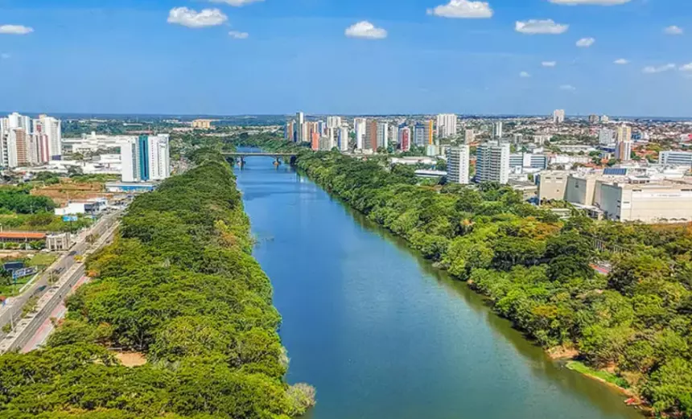

O Piauí é um estado localizado na região Nordeste do Brasil, conhecido por suas paisagens únicas e sua rica cultura. Sua capital é Teresina, uma cidade vibrante e cheia de história. O Piauí possui uma natureza diversificada, incluindo o famoso Parque Nacional de Sete Cidades, com suas formações rochosas impressionantes, e o Delta do Parnaíba, um dos poucos deltas em mar aberto das Américas, com praias, ilhas e manguezais. A economia do estado é baseada na agricultura, na pecuária e na exploração de recursos naturais, além do turismo, que atrai visitantes para suas belezas naturais e sítios arqueológicos. A cultura piauiense é marcada por festas tradicionais, como o São João, e manifestações folclóricas, além de uma culinária deliciosa com pratos típicos como a carne de sol, a galinha caipira e a paçoca. O Piauí é um estado que combina belezas naturais, história e cultura, sendo um destino interessante no Nordeste brasileiro.
